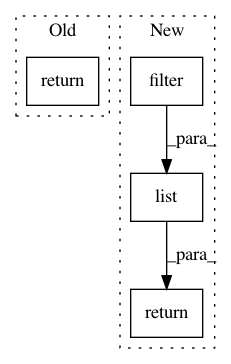

dcc67740c63eb5f906f026c3a0b8d2aec1b6fd8e,autokeras/net_transformer.py,,transform,#Any#,84
Before Change
graphs.append(to_wider_graph(deepcopy(graph)))
elif a == 2:
graphs.append(to_skip_connection_graph(deepcopy(graph)))
return graphs
After Change
graphs.append(to_wider_graph(deepcopy(graph)))
elif a == 2:
graphs.append(to_skip_connection_graph(deepcopy(graph)))
return list(filter(lambda graph: legal_graph(graph), graphs))
In pattern: SUPERPATTERN
Frequency: 3
Non-data size: 4
Instances
Project Name: keras-team/autokeras
Commit Name: dcc67740c63eb5f906f026c3a0b8d2aec1b6fd8e
Time: 2018-05-21
Author: jin@tamu.edu
File Name: autokeras/net_transformer.py
Class Name:
Method Name: transform
Project Name: deepmipt/DeepPavlov
Commit Name: 53b94b71bd12bcf5d31b0f7cbc2cc95edacb08e1
Time: 2018-03-25
Author: mary.vikhreva@gmail.com
File Name: deeppavlov/models/tokenizers/spacy_tokenizer.py
Class Name: StreamSpacyTokenizer
Method Name: _filter
Project Name: keras-team/autokeras
Commit Name: d3b18acb8ba630f30131a940e1dfeeb88eb5b8cc
Time: 2018-05-21
Author: jin@tamu.edu
File Name: autokeras/graph.py
Class Name: Graph
Method Name: _conv_layer_ids_in_order